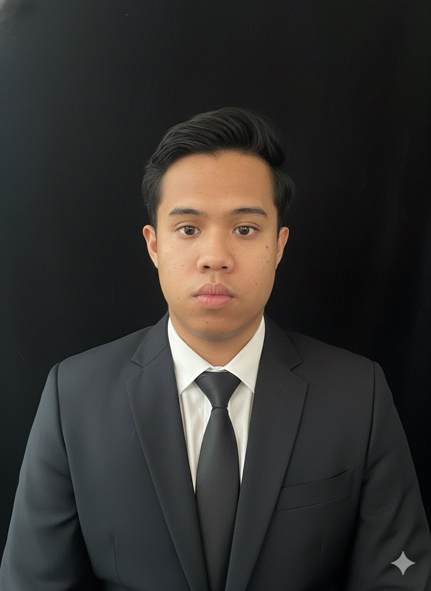

Maklumat Ringkas Mengenai Diri Saya.
|

IMAN DZULHILMI |
MY PROFILE
My name is Iman Dzulhilmi bin Dzulkifle. I am the 4th child out of 5 siblings. Having a humble family background taught me the meaning of responsibility and teamwork. Apart from focusing on daily tasks, I have a deep interest in the digital world where I really like playing video games (gaming). Playing video games helps me develop important skills such as critical thinking, strategic decision-making, and high concentration. Gaming also trains me to solve problems quickly under pressure, manage time efficiently, and work collaboratively in team-based environments.
INTELLIGENT
CREATIVE
THINKING
STRATEGIC
HEARTFUL
|